Links:
Some packages (others on the fly):
require(dplyr)
require(sf)
require(ggplot2)
require(survival)An a picture of caribou (Rangiver tarandus) - hand drawn by our own Megan Perra:
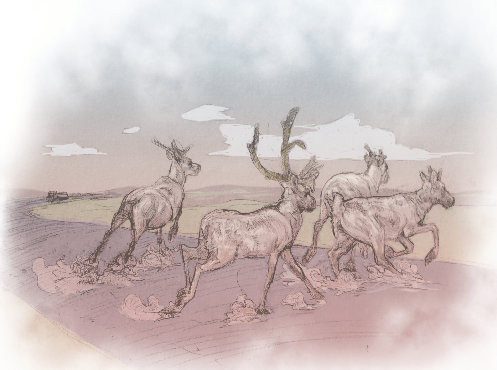
# load survival data
load(file = "data/PSQE_survival.rda")
# load movement data
load(file = "data/PSQE_move.rda")Survival (collar deployment, end, fate [survived, alive, censored]) data from 208 barren-ground caribou. Data are maintained by the Government of the Northwest Territories and movement data are hosted on MoveBank.
Location dates range from 2015-03-14 to 2023-04-01. The location data have been anonymized by removing the coordinates. Temperature (Daymet Daily Surface Weather Data, 10 km pixel resolution) were accessed via Google Earth Engine (Gorelick et al. 2017) and associated with every caribou location. We assigned each movement data record to a biological season based on its date, using predefined seasonal ranges: winter (Dec 1–Apr 19), spring (Apr 20–Jun 1), calving (Jun 2–Jun 28), insect harassment (Jun 29–Jul 14), late summer (Jul 15–Sep 6), and fall (Sep 7–Nov 30).
ggplot(survival_sub,
aes(x = startDate, y = ID)) +
geom_segment(aes(x = startDate, xend = endDate,
y = ID, yend = ID, color = Died),
linewidth = 2, alpha = .8) +
scale_color_manual(values = c('grey', "darkred")) +
facet_wrap(~Herd, scales = "free_y") +
theme_classic() +
theme(axis.text.y = element_blank()) 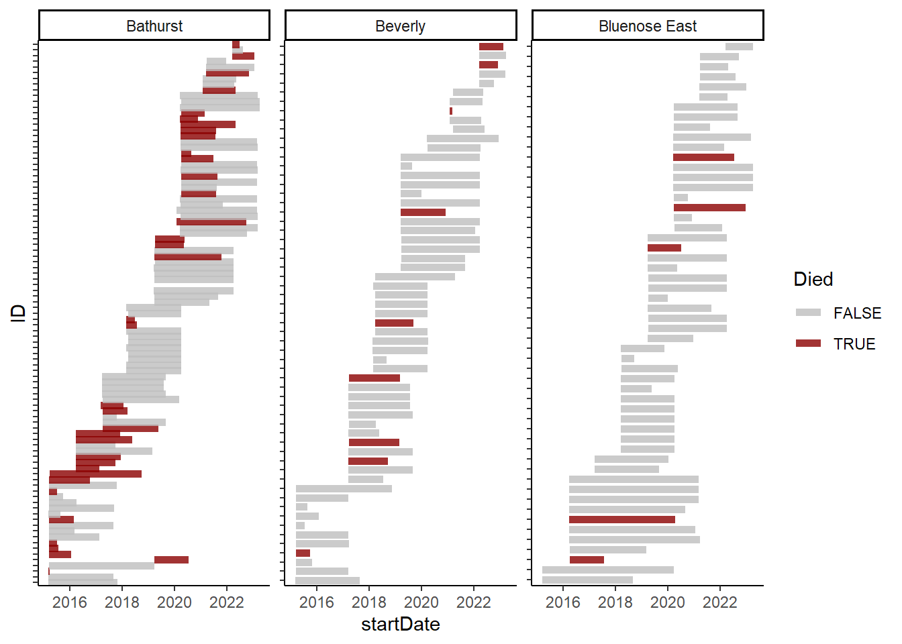
These figures show deployment and mortality of collared NWT caribou. Bars indicate the duration (deployment to end) of each animal, with grey indicating censored data while black are animals that were confirmed dead.
Surv data
objectsSurvival data are time-to-event data that consist of a distinct start time and end time. Our survival data contain the following variables:
days: observed survival time
Died: death status TRUE=died FALSE=censored
Note: the Surv() function in the {survival}
package accepts by default TRUE/FALSE, where TRUE is event and FALSE is
censored; 1/0 where 1 is event and 0 is censored; or 2/1 where 2 is
event and 1 is censored. Be sure the event indicator is properly
formatted.
Herd: “Bluenose East” “Bathurst” “Beverly”
The Surv() function from the {survival} package creates
a survival object to be used as the response variable in a model
formula. Each entry represents a subject’s survival time, with a +
symbol indicating a censored observation.
# make a surv object
survival_sub$BouSurv <- Surv(survival_sub$days, survival_sub$Died)
survival_sub$BouSurv[1:20]## [1] 1262+ 962+ 902+ 17 1468+ 479 314 129 902+ 118 703+ 362+
## [13] 904+ 351 164+ 915+ 387+ 196+ 115 949+The Kaplan-Meier method is a widely used non-parametric approach for estimating survival times and probabilities, producing a step function where each step corresponds to an event.
Kaplan-Meier curves are generated using the survfit()
function. The left-hand side of the formula specifies a
Surv object, while the right-hand side includes one or more
categorical variables to group observations. To create a single survival
curve, use ~ 1 on the right-hand side.
km1 <- survfit(BouSurv ~ 1, data=survival_sub)
print(km1)## Call: survfit(formula = BouSurv ~ 1, data = survival_sub)
##
## n events median 0.95LCL 0.95UCL
## [1,] 208 50 NA 1480 NAplot(km1, xscale=365.25, lwd=2, mark.time=TRUE,
xlab="Years since collaring", ylab="Survival",
main = "Kaplan-Maier Estimates")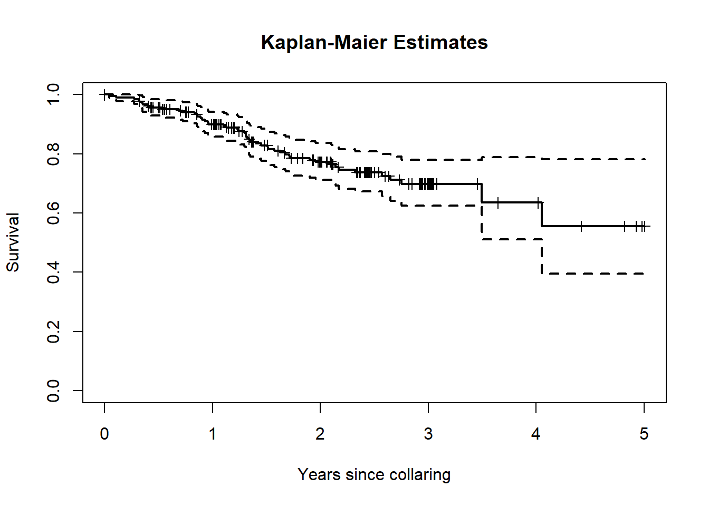
These estimates can be obtained by herd too:
km2 <- survfit(BouSurv ~ Herd, data=survival_sub)
print(km2)## Call: survfit(formula = BouSurv ~ Herd, data = survival_sub)
##
## n events median 0.95LCL 0.95UCL
## Herd=Bathurst 95 36 1277 940 NA
## Herd=Beverly 59 9 NA NA NA
## Herd=Bluenose East 54 5 NA NA NAplot(km2, col = 1:3, xscale=365.25, lwd=2, mark.time=TRUE,
xlab="Years since collaring", ylab="Survival",
main = "Kaplan-Maier Estimates - by Herd")
legend("bottomleft", .9,
c("Bathurst", "Beverly", "Bluenose East"),
col=1:3, lwd=2, bty='n')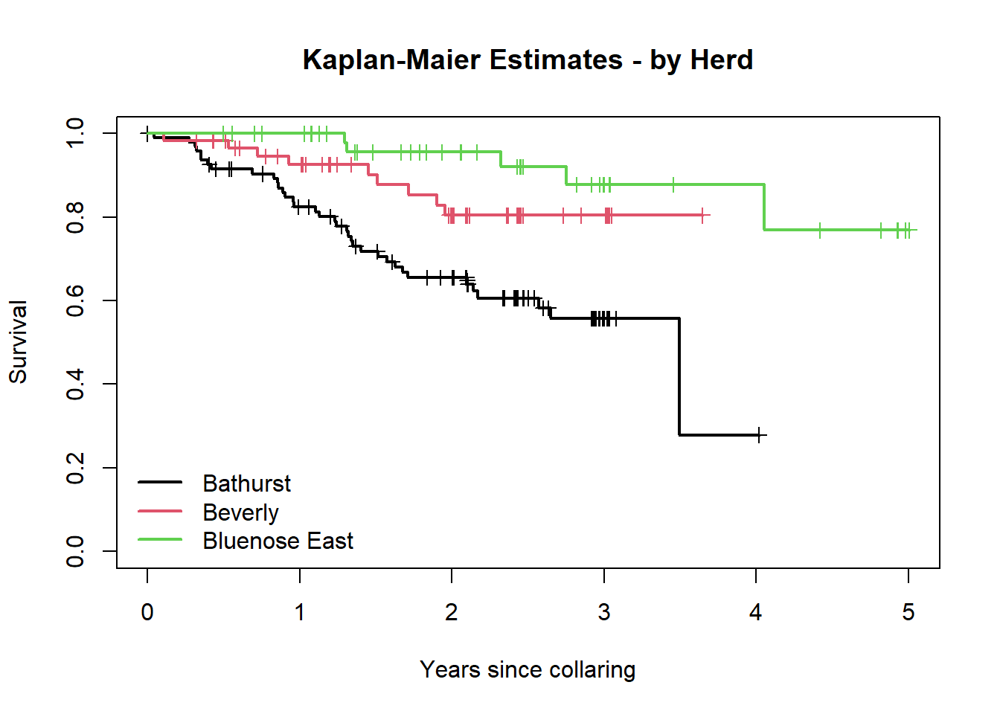
Note the output of the summary commands:
summary(km2)## Call: survfit(formula = BouSurv ~ Herd, data = survival_sub)
##
## Herd=Bathurst
## time n.risk n.event survival std.err lower 95% CI upper 95% CI
## 17 94 1 0.989 0.0106 0.9688 1.000
## 101 93 1 0.979 0.0149 0.9500 1.000
## 115 92 1 0.968 0.0181 0.9332 1.000
## 118 91 1 0.957 0.0208 0.9175 0.999
## 128 90 1 0.947 0.0231 0.9025 0.993
## 129 89 1 0.936 0.0252 0.8880 0.987
## 144 88 1 0.926 0.0271 0.8740 0.980
## 153 86 1 0.915 0.0288 0.8600 0.973
## 251 82 1 0.904 0.0306 0.8457 0.966
## 304 80 1 0.892 0.0322 0.8314 0.958
## 312 79 1 0.881 0.0337 0.8174 0.950
## 314 78 1 0.870 0.0351 0.8036 0.941
## 325 77 1 0.858 0.0364 0.7899 0.933
## 331 76 1 0.847 0.0377 0.7764 0.924
## 350 75 1 0.836 0.0388 0.7631 0.915
## 351 74 1 0.825 0.0399 0.7499 0.907
## 404 71 1 0.813 0.0410 0.7364 0.897
## 413 70 1 0.801 0.0420 0.7230 0.888
## 450 68 1 0.790 0.0430 0.7096 0.879
## 453 67 1 0.778 0.0440 0.6962 0.869
## 479 65 1 0.766 0.0449 0.6827 0.859
## 482 64 1 0.754 0.0458 0.6693 0.849
## 489 63 1 0.742 0.0466 0.6560 0.839
## 492 62 1 0.730 0.0473 0.6428 0.829
## 513 60 1 0.718 0.0481 0.6294 0.818
## 553 58 1 0.705 0.0488 0.6159 0.808
## 575 57 1 0.693 0.0495 0.6024 0.797
## 595 55 1 0.680 0.0502 0.5888 0.786
## 613 54 1 0.668 0.0508 0.5753 0.775
## 625 53 1 0.655 0.0514 0.5618 0.764
## 767 43 1 0.640 0.0524 0.5451 0.751
## 782 38 1 0.623 0.0537 0.5263 0.738
## 792 37 1 0.606 0.0548 0.5078 0.724
## 940 26 1 0.583 0.0574 0.4806 0.707
## 968 23 1 0.558 0.0603 0.4511 0.689
## 1277 2 1 0.279 0.1994 0.0686 1.000
##
## Herd=Beverly
## time n.risk n.event survival std.err lower 95% CI upper 95% CI
## 40 59 1 0.983 0.0168 0.951 1.000
## 194 54 1 0.965 0.0244 0.918 1.000
## 265 51 1 0.946 0.0304 0.888 1.000
## 339 48 1 0.926 0.0356 0.859 0.999
## 530 38 1 0.902 0.0422 0.823 0.988
## 552 37 1 0.877 0.0476 0.789 0.976
## 626 36 1 0.853 0.0521 0.757 0.962
## 695 35 1 0.829 0.0560 0.726 0.946
## 714 34 1 0.804 0.0595 0.696 0.930
##
## Herd=Bluenose East
## time n.risk n.event survival std.err lower 95% CI upper 95% CI
## 473 45 1 0.978 0.0220 0.936 1
## 478 44 1 0.956 0.0307 0.897 1
## 849 27 1 0.920 0.0456 0.835 1
## 1005 22 1 0.878 0.0597 0.769 1
## 1480 8 1 0.769 0.1152 0.573 1There is also a ggplot version of this command, which is
“prettier”, and easily adds confidence intervals:
library(ggsurvfit)
ggsurvfit(km2) + add_confidence_interval()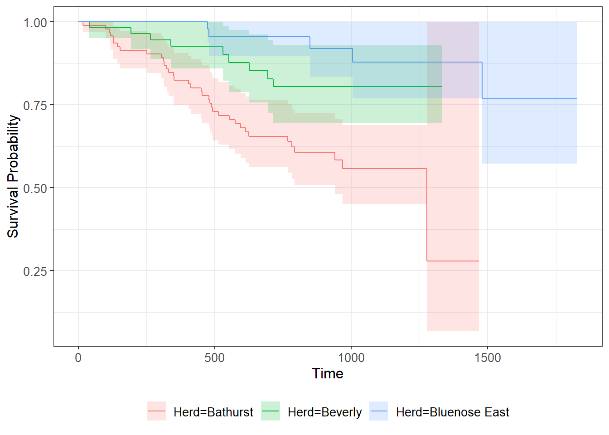
But to understand how this plot is made it is good to delve into the
structure of this survfit object:
herd <- rep(c("Bathurst","Beverly","Bluenose East"), times = km2$strata)
km2_df <- with(km2,
data.frame(time, n.risk,
n.event, n.censor,
surv, std.err,
cumhaz, std.chaz,
lower, upper,
herd))With this data frame, you can make your own plots how you like:
ggplot(km2_df, aes(time, surv, col = herd, fill = herd,
ymin = lower, ymax = upper)) +
geom_ribbon(alpha = 0.3) + geom_point() + geom_line()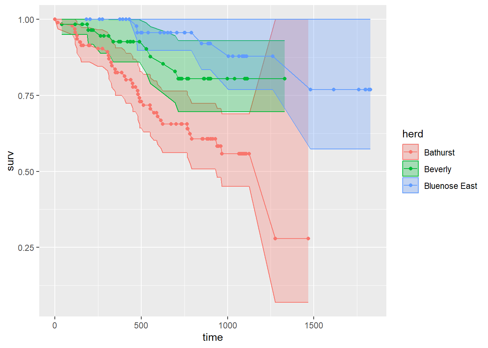
To get an estimate of a constant hazard model from the Kaplan-Meier survival estimate we use the relationship between the survival function \(S(t)\) and the cumulative hazard function \(H(t)\). The survival function is:
\(S(t) = e^{-H(t)}\)
This means that if we plot \(\log(S(t))\) against \(t\), the cumulative hazard function \(H(t)\) can be estimated as the negative slope of the resulting curve.
We can use the data frame created above for this. For example, just for Bathurst:
lm(log(surv) ~ time - 1, data = km2_df |> subset(herd == "Bathurst")) |> summary()##
## Call:
## lm(formula = log(surv) ~ time - 1, data = subset(km2_df, herd ==
## "Bathurst"))
##
## Residuals:
## Min 1Q Median 3Q Max
## -0.52886 0.00044 0.02045 0.04092 0.07462
##
## Coefficients:
## Estimate Std. Error t value Pr(>|t|)
## time -5.861e-04 1.147e-05 -51.11 <2e-16 ***
## ---
## Signif. codes: 0 '***' 0.001 '**' 0.01 '*' 0.05 '.' 0.1 ' ' 1
##
## Residual standard error: 0.08002 on 87 degrees of freedom
## Multiple R-squared: 0.9678, Adjusted R-squared: 0.9674
## F-statistic: 2613 on 1 and 87 DF, p-value: < 2.2e-16Baseline constant hazard rate: 0.00059 per day.
To check out the fit:
cont.hazard.fit <- lm(log(surv) ~ time - 1, data = km2_df |> subset(herd == "Bathurst"))
plot(log(surv) ~ time, data = km2_df |> subset(herd == "Bathurst"),
main = "log Survival plot")
abline(cont.hazard.fit, col = 2, lwd = 2)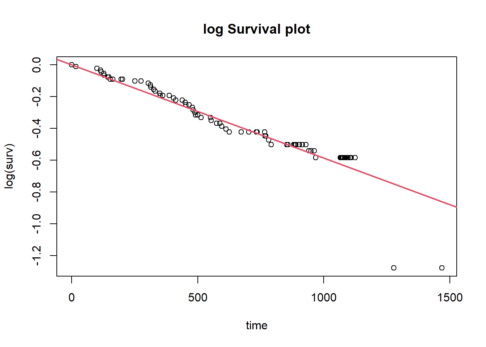
Quick Exercise: Compute this for the other herds!
Unlike Kaplan-Meier, which estimates survival directly, the Nelson-Aalen estimator calculates the cumulative hazard rates over time using:
\[ H(t) = \sum_{i: t_i \leq t} \frac{d_i}{n_i} \]
where \(d_i\) is the number of events at time \(t_i\), and \(n_i\) is the number at risk just before \(t_i\).
In the survfit() function, the ctype = 1
option uses the N-A estimator rather than the default Kaplan-Meier.
# estimate Nelson-Aalon
na1 <- survfit(Surv(days, Died) ~ Herd,
data=survival_sub,
ctype=1)
print(na1)## Call: survfit(formula = Surv(days, Died) ~ Herd, data = survival_sub,
## ctype = 1)
##
## n events median 0.95LCL 0.95UCL
## Herd=Bathurst 95 36 1277 940 NA
## Herd=Beverly 59 9 NA NA NA
## Herd=Bluenose East 54 5 NA NA NA# just plots the survival function, boring!
plot(na1, xscale=365.25, lwd=2, mark.time=TRUE,
xlab="Years since collaring", ylab="Survival")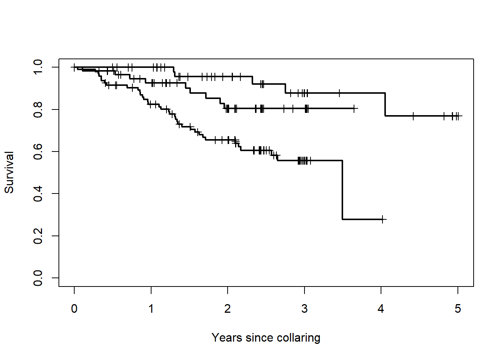
That’s a plot of the survival function, that shouldn’t look too different from the one above.
We can get the cumulative survival (which is what the N-A estimator is actually computing). We’ll do this for the Bathurst herd again, first - again - building a data frame:
herd <- rep(c("Bathurst","Beverly","Bluenose East"),
times = km2$strata)
na1_df <- with(na1,
data.frame(time, n.risk,
n.event, n.censor,
surv, std.err,
cumhaz, std.chaz,
lower, upper,
herd))Here are some cumulative hazard curves - using the ggplot template above:
ggplot(na1_df, aes(time, cumhaz, col = herd, fill = herd,
ymin = cumhaz - 2*std.chaz,
ymax = cumhaz + 2*std.chaz)) +
geom_ribbon(alpha = 0.3) + geom_point() + geom_line()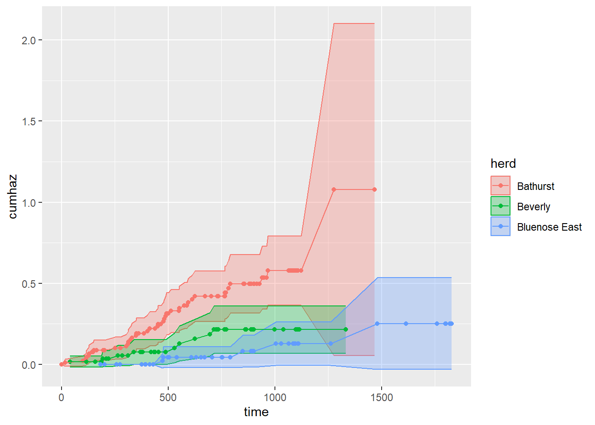
The slope of the cumulative hazard estimator is also an estimate of a constant baseline hazard:
lm(cumhaz ~ time-1, data = na1_df |> subset(herd == "Bathurst")) |> summary()##
## Call:
## lm(formula = cumhaz ~ time - 1, data = subset(na1_df, herd ==
## "Bathurst"))
##
## Residuals:
## Min 1Q Median 3Q Max
## -0.06281 -0.03320 -0.01431 0.00511 0.34991
##
## Coefficients:
## Estimate Std. Error t value Pr(>|t|)
## time 5.704e-04 7.853e-06 72.63 <2e-16 ***
## ---
## Signif. codes: 0 '***' 0.001 '**' 0.01 '*' 0.05 '.' 0.1 ' ' 1
##
## Residual standard error: 0.05481 on 87 degrees of freedom
## Multiple R-squared: 0.9838, Adjusted R-squared: 0.9836
## F-statistic: 5276 on 1 and 87 DF, p-value: < 2.2e-16The estimator is similar (though not exactly) to the one obtained by the Kaplan-Meier estimator: 0.00057 1/day.
Quick Exercise: Compute this for the other herds!
The Cox proportional hazards model is widely used in survival analysis because it relates the hazard (or risk) of an event happening to explanatory covariates without requiring the assumption of a specific baseline hazard distribution. However, its validity relies on the proportional hazards assumption. In other words, the model assumes that the effect of a covariate (i.e. species or treatment) on the risk of the event (dying) is constant over time. For example, if species A is twice as likely to die as species B early in the study, it remains twice as likely to die later, regardless of how much time has passed.
The hazard function for an individual at time \(t\), given covariates \(\mathbf{x}\), is modeled as:
\[ h(t|\mathbf{x}) = h_0(t) \exp(\beta_1 x_1 + \beta_2 x_2 + \dots + \beta_p x_p) \] Where:
\(h(t|\mathbf{x})\) is the hazard function at time \(t\)
\(h_0(t)\) is the baseline hazard (the hazard when all covariates are zero)
\(\beta_1, \beta_2, \dots, \beta_p\) are coefficients of the covariates \(x_1, x_2, \dots, x_p\).
Or - more compactly:
\[ h(t|\mathbf{x}) = h_0(t) \exp({\bf X} \beta) \]
The assumption of proportional hazards means that the hazard ratio between two individuals, \(A\) and \(B\), with covariates \(\mathbf{x}_A\) and \(\mathbf{x}_B\), is constant over time:
\[ \frac{h(t|\mathbf{x}_A)}{h(t|\mathbf{x}_B)} = \exp\big(\beta_1(x_{1A} - x_{1B}) + \beta_2(x_{2A} - x_{2B}) + \dots + \beta_p(x_{pA} - x_{pB})\big) \]
This ratio does not depend on \(t\), implying that the relative effect of the covariates on the hazard remains the same throughout the study period.
We use the coxph() function in the survival package to
quantify the effect size for predictor variables.
cph_fit <- coxph(Surv(days, Died) ~ Herd, data=survival_sub)
summary(cph_fit)## Call:
## coxph(formula = Surv(days, Died) ~ Herd, data = survival_sub)
##
## n= 208, number of events= 50
##
## coef exp(coef) se(coef) z Pr(>|z|)
## HerdBeverly -0.8941 0.4090 0.3729 -2.398 0.016503 *
## HerdBluenose East -1.8853 0.1518 0.5319 -3.545 0.000393 ***
## ---
## Signif. codes: 0 '***' 0.001 '**' 0.01 '*' 0.05 '.' 0.1 ' ' 1
##
## exp(coef) exp(-coef) lower .95 upper .95
## HerdBeverly 0.4090 2.445 0.19692 0.8494
## HerdBluenose East 0.1518 6.589 0.05351 0.4305
##
## Concordance= 0.676 (se = 0.03 )
## Likelihood ratio test= 21.64 on 2 df, p=2e-05
## Wald test = 16.27 on 2 df, p=3e-04
## Score (logrank) test = 19.93 on 2 df, p=5e-05In a Cox regression model, the quantity of interest is the hazard ratio (HR). The HR represents the ratio of hazards between two groups at any given time point. It reflects the instantaneous rate at which the event of interest occurs for individuals who are still at risk. It is important to note that the HR is not a measure of risk, although it is often mistakenly interpreted as such.
If the regression parameter is denoted as \(\beta\), then the hazard ratio is given by:
\[ HR = e^\beta \]
This equation describes how the hazard of the event changes relative to a one-unit change in the predictor variable.
# plot predictions
pred_df <- expand.grid(Died = c(TRUE,FALSE),
Herd = unique(survival_sub$Herd),
days = 1:(365*2)) #2 years
preds <- predict(cph_fit, newdata = pred_df,
type = "survival", se.fit = TRUE)
pred_df <- pred_df |> mutate(fit = preds$fit,
lcl = fit - 1.96*preds$se.fit,
ucl = fit + 1.96*preds$se.fit,) |>
mutate(Herd = as.factor(Herd))
ggplot(data = pred_df,
aes(x = days, y = fit, fill = Herd))+
geom_ribbon(aes(ymin = lcl, ymax = ucl, fill = Herd),
alpha = .5) +
geom_line(aes(color = Herd), cex = 1)+
theme_minimal() +
scale_fill_brewer(palette = "Dark2",
guide = FALSE) +
scale_color_brewer(palette = "Dark2",
name = "Herd")+
labs(y = "survival", x = "days")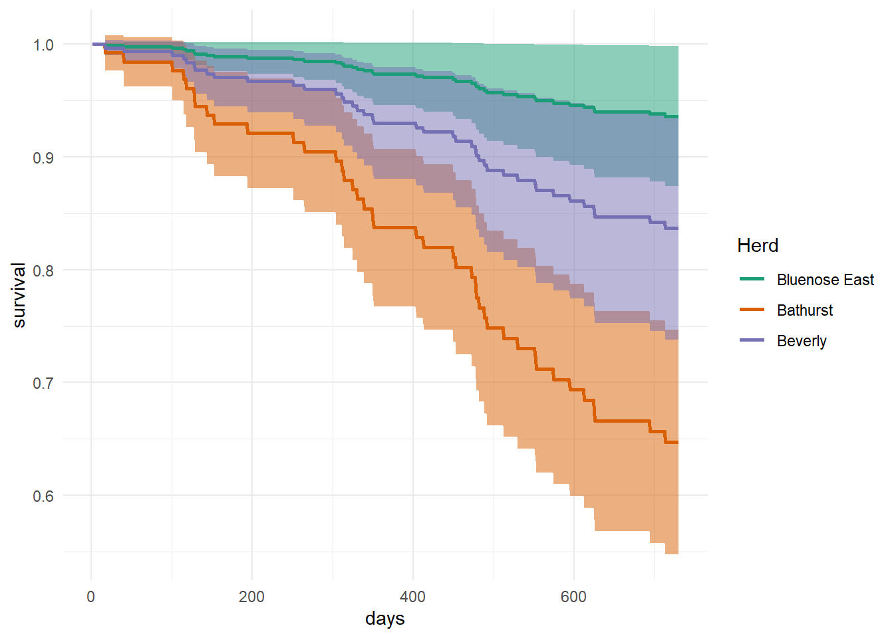
With the movement data, we’re curious about the impact of temperature on survival and whether it changes throughout the year. We can investigate the impact of temperature on survival using discrete seasons and CPH.
First, let’s visualize seasonal temperatures and whether individuals lived or died.
tmax_summary <- move_sub |>
subset(Herd == "Bathurst") |>
group_by(ID, bioYear, season, Died) |>
summarize(temp_mean = mean(tmax, na.rm = TRUE)) |>
unique()
ggplot(tmax_summary |> subset(!Died),
aes(x = bioYear, y = temp_mean)) +
geom_point(size = 2, alpha = .4) +
theme(legend.position = "none") +
geom_point(data = tmax_summary |> subset(Died),
pch = 17, color = "red", size = 1) +
facet_wrap(~season)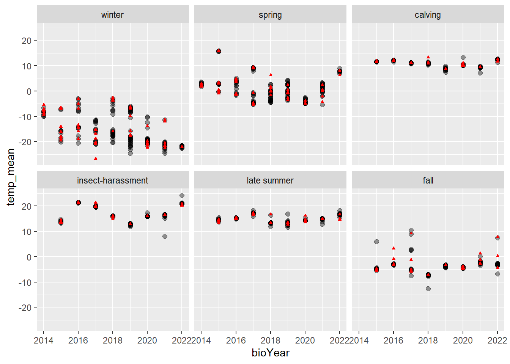
To run the CPH models, we need to summarize the data, annually for each caribou and season, calculate the mean temperature experienced, whether the animal died, and number of days survived.
# make data frame for cph
# one row for each caribou-season
# with whether they died, # days survived, mean temperature
cph_df <- move_sub |>
#subset(Herd == "Bathurst") |>
group_by(ID, bioYear, season) |>
dplyr::summarise(Died = sum(Death) > 0,
days = difftime(max(Date), min(Date), units = "days"),
temp = mean(tmax, na.rm = TRUE))Then, we can use a fun plyr function to fit CPH model analyzing days survived as a function of temperature for each season.
require(plyr)
fit_list <- dlply(cph_df, "season", function(df)
fit <- coxph(Surv(days, Died) ~ temp, data = df)
)
require(broom)
ldply(fit_list, tidy)## season term estimate std.error statistic p.value
## 1 winter temp -0.10874009 0.08079392 -1.3458944 1.783366e-01
## 2 spring temp -0.05692325 0.13348155 -0.4264503 6.697797e-01
## 3 calving temp 2.19576457 1.53947189 1.4263103 1.537788e-01
## 4 insect-harassment temp 0.07543888 0.15033722 0.5017978 6.158098e-01
## 5 late summer temp 0.50576748 0.36795353 1.3745418 1.692736e-01
## 6 fall temp 0.53347256 0.08826209 6.0441870 1.501652e-09Nothing significant pops out except for in the fall, there is a positive significant coefficient for temperature. Remember that CPH models hazard ratios, so higher temps associated with higher mortality in fall.
Estimating a survival process where the hazard function is:
\[h(t|\beta) = \exp\left({\bf X}(t)\beta\right)\]
This instantaneous hazard fluctuates with the “risk” covariate \({\bf X}(t)\), which changes in time. The exponential function guarantees that it is positive.
From the hazard function, the survival function is: \[ S(t | \beta) = \exp\left(-\int_0^t h(u | \beta) du\right) = \exp\left(-\int_0^t \exp\left({\bf X}(u)\beta\right) du\right) \]
We observe events from this process: \(T_i\) where \(i \in \{1,2, ..., n_t\}\) and censored observations: \(Y_i\) where \(i \in \{1,2, ..., n_y\}\).
For event times \(T_i\), the contribution to the likelihood is given by the density function:
\[ f(T_i | \beta) = \exp\left({\bf X}(T_i)\beta\right) \exp\left(-\int_{0}^{T_i} \exp\left({\bf X}(t')\beta\right)\, dt'\right) \]
For censored times \(Y_i\), the contribution to the likelihood is the survival function:
\[P(T > Y_i | \beta) = S(Y_i | \beta) = \exp\left(-\int_0^{Y_i} \exp\left({\bf X}(t')\beta\right) dt'\right)\]
Thus, the total likelihood function is: \[ L(\beta) = \prod_{i=1}^{n_t} \exp\left({\bf X}(T_i) \beta\right) \exp\left(-\int_0^{T_i} \exp\left({\bf X}(u)\beta\right) du\right) \times \prod_{j=1}^{n_y} \exp\left(-\int_0^{Y_j} \exp\left({\bf X}(u)\beta\right) du\right) \]
Taking the logarithm: \[ \ell(\beta) = \sum_{i=1}^{n_t} {\bf X}(T_i) \beta - \sum_{i=1}^{n_t} \int_0^{T_i} \exp\left({\bf X}(u)\beta\right) du - \sum_{j=1}^{n_y} \int_0^{Y_j} \exp\left({\bf X}(u)\beta\right) du. \]
This function can be used to estimate \(\beta\) via maximum likelihood estimation (MLE).
Since the covariate \(\mathbf{X}(t)\) is collected at discrete time points (e.g., daily measurements), we approximate the integral in the likelihood function with a sum over discrete time steps.
Let’s denote the discrete time points as \(t_1, t_2, \dots\), and assume the data is recorded at intervals \(\Delta t\), which we take as 1 for simplicity (e.g., daily measurements, and the hazard rate is then in units of 1/day). The integral term is then approximated by a sum:
\[\int_0^{T_i} \exp\left({\bf X}(t') \beta\right) dt' \approx \sum_{t'=0}^{T_i} \exp\left({\bf X}(t') \beta\right) \Delta t. \]
Since \(\Delta t = 1\) in our case, this simplifies to:
\[ \sum_{t'=0}^{T_i} \exp\left({\bf X}(t') \beta\right). \]
Using this approximation, the log-likelihood function can be rewritten as:
\[\ell(\beta) = \sum_{i=1}^{n_t} {\bf X}(T_i) \beta - \sum_{i=1}^{n_t} \sum_{t'=0}^{T_i} \exp\left({\bf X}(t')\beta\right) - \sum_{j=1}^{n_y} \sum_{t'=0}^{Y_j} \exp\left({\bf X}(t')\beta\right).\]
This formulation allows for practical computation using observed, discretely sampled covariate values.
log_likelihood <- function(params = c(beta0 = 1, beta1 = 0), data) {
beta0 <- params["beta0"]
beta1 <- params["beta1"]
# Get unique IDs
unique_ids <- unique(data$ID)
# Initialize log-likelihood
logL <- 0
# Loop over each individual
for (id in unique_ids) {
# Extract individual's data
indiv_data <- data[data$ID == id, ]
# Event time or censoring time
if (indiv_data$Died[1]) { # If individual died
Ti <- indiv_data$days[1] # Death time
event_term <- beta0 + beta1 * indiv_data$tmax[nrow(indiv_data)]
risk_term <- sum(exp(beta0 + beta1 * indiv_data$tmax[indiv_data$days <= Ti]), na.rm = TRUE)
} else { # If individual was censored
Yi <- indiv_data$days[1] # Censoring time
event_term <- 0 # No contribution from an event
risk_term <- sum(exp(beta0 + beta1 * indiv_data$tmax[indiv_data$days <= Yi]), na.rm = TRUE)
}
# Update log-likelihood
logL <- logL + event_term - risk_term
}
return(-logL)
}p0 <- c(beta0 = 1, beta1 = 0)
log_likelihood(p0, move_sub |> subset(Herd == "Bathurst"))## beta0
## 160543.1dynamic_hazard_fit <- optim(p0, log_likelihood, data = move_sub |> subset(Herd == "Bathurst"), hessian = TRUE)
dynamic_hazard_fit## $par
## beta0 beta1
## -7.52049021 -0.01247488
##
## $value
## [1] 287.0351
##
## $counts
## function gradient
## 63 NA
##
## $convergence
## [1] 0
##
## $message
## NULL
##
## $hessian
## beta0 beta1
## beta0 34.01354 -212.0034
## beta1 -212.00342 8744.6865It worked! The predictions (with standard errors) are:
with(dynamic_hazard_fit,
data.frame(par,
se = solve(hessian) |> diag() |> sqrt()) |>
mutate(CI.low = par - 1.96 * se,
CI.high = par + 1.96 * se)
) |> round(5)## par se CI.low CI.high
## beta0 -7.52049 0.18610 -7.88525 -7.15573
## beta1 -0.01247 0.01161 -0.03522 0.01027